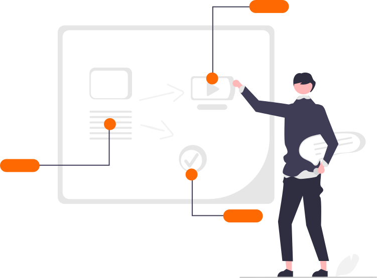

Establish a shared basis for AI decisions.
Your core provider has new AI features. Teams have ideas of their own. Before approving another tool, leadership needs a shared understanding of what AI can do, where it fits, and the impact of adoption.

$9,500

Bring the opportunities already on your desk.
The discussion starts with situations your leadership recognizes.
A core or digital banking provider proposes an AI feature, and you need to understand the capability behind the demonstration.
Staff want to use AI for drafting or research, and managers need to discuss acceptable use and customer or member information.
A department has a pilot idea, but the benefit, readiness, and ownership are not yet clear.
What the workshop includes.
A pre-workshop intake call to understand your technology and priorities.
An executive session on AI capabilities, limitations, real use cases, and questions to ask vendors.
Use-case prioritization by value and readiness, captured in an AI Opportunity Scorecard for each executive.
A manager session on leading teams through AI change, with a Change Readiness Checklist.
A written session summary and a recording when arranged with your team.
Start from a collective understanding.
Leadership leaves with a shared vocabulary and a ranked short list of uses worth exploring. Managers have a way to discuss the change with their teams. You keep the materials and reasoning, whether you take the next step internally, with an existing provider, or with us.

Start with your team's priorities.
Tell us which vendor proposals, staff questions, or pilot ideas are prompting the conversation and we'll discuss how to scope them.
Discuss your workshop